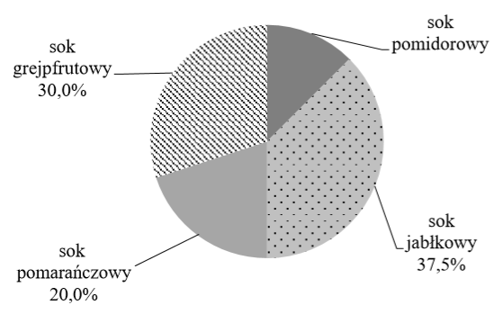
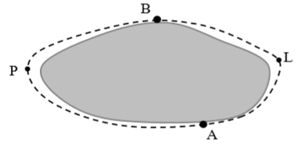
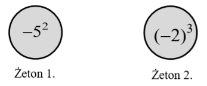
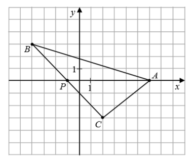
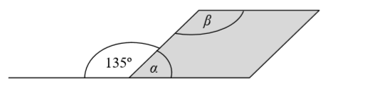
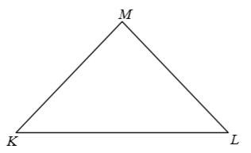
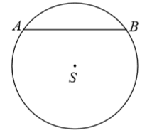
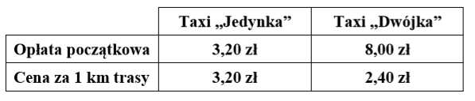
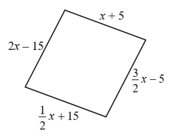
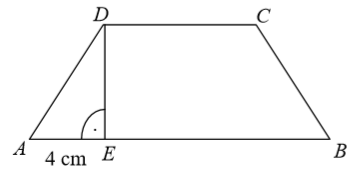

Egzamin ósmoklasisty 2020 marzec
Na diagramie kołowym przedstawiono procentowy udział soków o różnych smakach, które
zostały sprzedane podczas festynu. Najmniej sprzedano soku pomidorowego, tylko \(15\) kartonów, a
najwięcej – soku jabłkowego. 
Oceń prawdziwość podanych zdań. Wybierz P, jeśli zdanie jest prawdziwe, albo F – jeśli
jest fałszywe.
| Sprzedano łącznie \(125\) kartonów soków. | P | F |
| Sprzedano o \(30\) kartonów więcej soku jabłkowego niż pomidorowego. | P | F |
W liczbie pięciocyfrowej \(258\#4\), podzielnej przez \(4\) i niepodzielnej przez
\(3\), cyfrę dziesiątek zastąpiono znakiem „\(\#\)”.
Jakiej cyfry na pewno nie zastąpiono znakiem „\(\#\)”? Wybierz właściwą odpowiedź spośród podanych.
A.\( 0 \)
B.\( 4 \)
C.\( 6 \)
D.\( 8 \)
Wartość wyrażenia \(\frac{4}{3}\cdot 3-2^3\) jest równa
A.\( -\frac{14}{3} \)
B.\( -4 \)
C.\( -7 \)
D.\( -\frac{8}{3} \)
E.\( -2 \)
Miejscowości \(A\) i \(B\) położone na przeciwległych brzegach jeziora są połączone
dwiema drogami – drogą polną prowadzącą przez punkt \(P\) i drogą leśną prowadzącą przez punkt
\(L\). Długość drogi polnej \(APB\) wynosi \(10\) km, a długość drogi leśnej \(ALB\) jest równa
\(6\) km.  Matylda i Karol
wyruszyli na rowerach z miejscowości \(A\) do miejscowości \(B\) o godzinie \(10{:}00\). Matylda
jechała drogą leśną, a Karol – drogą polną. Średnia prędkość jazdy Matyldy wynosiła
\(15\frac{\text{km}}{\text{h}}\), a średnia prędkość Karola była równa
\(20\frac{\text{km}}{\text{h}}\).
Oceń prawdziwość podanych zdań. Wybierz
P, jeśli zdanie jest prawdziwe, albo F – jeśli jest fałszywe.
| Do miejscowości \(B\) Karol przyjechał wcześniej niż Matylda. | P | F |
| Matylda przyjechała do miejscowości \(B\) o godzinie \(10{:}24\). | P | F |
Na treningu odmierzano za pomocą aplikacji komputerowej \(15\)-minutowe cykle
ćwiczeń, które następowały bezpośrednio jeden po drugim. Ola zaczęła ćwiczyć, gdy pierwszy cykl
trwał już \(2\) minuty, a skończyła, gdy do końca trzeciego cyklu zostało jeszcze \(7\) minut.
Ile łącznie minut Ola ćwiczyła na zajęciach? Wybierz właściwą odpowiedź spośród
podanych.
A.\( 36 \)
B.\( 35 \)
C.\( 24 \)
D.\( 21 \)
Oskar jest o \(6\) lat starszy od swoich braci bliźniaków. Obecnie Oskar i jego
dwaj bracia mają razem \(42\) lata.
Ile lat ma obecnie każdy z bliźniaków? Wybierz
właściwą odpowiedź spośród podanych.
A.\( 18 \)
B.\( 16 \)
C.\( 14 \)
D.\( 12 \)
Marta przygotowała dwa żetony takie, że suma liczb zapisanych na obu stronach
każdego żetonu jest równa zero. Widok jednej ze stron tych żetonów przedstawiono poniżej.  Jakie liczby znajdują się na
niewidocznych stronach tych żetonów?
A.\( -25 \) i \(-8\)
B.\( -25 \) i \(8\)
C.\( 25 \) i \(-8\)
D.\( 25 \) i \(8\)
W układzie współrzędnych zaznaczono trójkąt \(ABC\) oraz punkt \(P\) należący do
boku \(BC\). Wszystkie współrzędne punktów \(A\), \(B\), \(C\) i \(P\) są liczbami całkowitymi.  Oceń prawdziwość podanych zdań.
Wybierz P, jeśli zdanie jest prawdziwe, albo F – jeśli jest fałszywe.
| Pole trójkąta \(PAB\) jest równe polu trójkąta \(PAC\). | P | F |
| Pole trójkąta \(ABC\) jest równe \(21\). | P | F |
Trójkąt, w którym długości boków są do siebie w stosunku \(3 : 4 : 5\) nazywa się
trójkątem egipskim.
Z odcinków o jakich długościach nie można zbudować trójkąta egipskiego?
Wybierz właściwą odpowiedź spośród podanych.
A.\( 6, 8, 10 \)
B.\( 9, 12, 15 \)
C.\( 12, 20, 25 \)
D.\( 21, 28, 35 \)
Sprzedawca kupił od ogrodnika róże i tulipany za łączną kwotę \(580\) zł. Jeden
tulipan kosztował \(1{,}20\) zł, a cena jednej róży była równa \(4\) zł. Sprzedawca kupił o \(50\)
tulipanów więcej niż róż.
Dokończ zdanie. Wybierz właściwą odpowiedź spośród
podanych.
Jeśli liczbę zakupionych tulipanów oznaczymy przez \(t\), to podane zależności
opisuje równanie A.\( 1{,}2(t+50)+4t=580 \)
B.\( 1{,}2(t–50)+4t=580 \)
C.\( 1{,}2t+4(t–50)=580 \)
D.\( 1{,}2t+4(t+50)=580 \)
Figura zacieniowana na rysunku jest równoległobokiem.  Oceń prawdziwość podanych zdań.
Wybierz P, jeśli zdanie jest prawdziwe, albo F – jeśli jest fałszywe.
| Suma miar kątów \(\alpha \) i \(\beta \) wynosi \(180^\circ \). | P | F |
| Kąt \(\alpha \) ma miarę \(3\) razy mniejszą niż kąt \(\beta \). | P | F |
Na rysunku przedstawiono trójkąt równoramienny \(KLM\) o ramionach \(KM\) i \(LM\).
Miara kąta \(KML\) jest dwa razy większa niż miara kąta \(KLM\). 
Trójkąt KLM jest
Uzupełnij poniższe zdania. Wybierz odpowiedź spośród oznaczonych literami A i B
oraz odpowiedź spośród oznaczonych literami C i D.
Miara kąta \(KLM\) jest równa A
B
A.\( 40^\circ \)
B.\( 45^\circ \)
C
D
C.rozwartokątny
D.prostokątny
Małe trójkąty równoboczne o bokach długości \(1\) układano obok siebie tak, że
uzyskiwano kolejne, coraz większe trójkąty równoboczne, według reguły przedstawionej na poniższym
rysunku.  Ile małych trójkątów
równobocznych należy użyć, aby ułożyć trójkąt równoboczny o podstawie równej \(5\)? Wybierz właściwą
odpowiedź spośród podanych
Ile małych trójkątów
równobocznych należy użyć, aby ułożyć trójkąt równoboczny o podstawie równej \(5\)? Wybierz właściwą
odpowiedź spośród podanych
Ile małych trójkątów
równobocznych należy użyć, aby ułożyć trójkąt równoboczny o podstawie równej \(5\)? Wybierz właściwą
odpowiedź spośród podanych A.\( 9 \)
B.\( 16 \)
C.\( 25 \)
D.\( 50 \)
W okręgu o środku \(S\) i promieniu \(5\) cm narysowano cięciwę \(AB\) o długości
\(8\) cm.  Oceń prawdziwość
podanych zdań. Wybierz P, jeśli zdanie jest prawdziwe, albo F – jeśli jest fałszywe.
| Odległość punktu \(S\) od cięciwy \(AB\) jest równa \(3\) cm. | P | F |
| Obwód trójkąta \(ASB\) jest równy \(16\) cm. | P | F |
Średnia arytmetyczna dwóch ocen Janka z matematyki jest równa \(3{,}5\).
Jaką trzecią ocenę musi uzyskać Janek, by średnia jego ocen była równa \(4\)?
Jaką trzecią ocenę musi uzyskać Janek, by średnia jego ocen była równa \(4\)?
A.\( 3 \)
B.\( 4 \)
C.\( 5 \)
D.\( 6 \)
W tabeli podano cenniki dwóch korporacji taksówkowych. Należność za przejazd składa
się z jednorazowej opłaty początkowej i doliczonej do niej opłaty zależnej od długości przejechanej
trasy.  Pan Jan korzystał z Taxi
„Jedynka”, a pan Wojciech – z Taxi „Dwójka”. Obaj panowie pokonali trasę o tej samej długości i
zapłacili tyle samo. Ile kilometrów miała trasa, którą przejechał każdy z nich? Zapisz obliczenia.
Zmieszano \(40\) dag rodzynek w cenie \(12\) zł za kilogram oraz \(60\) dag pestek
dyni w cenie \(17\) zł za kilogram. Ile kosztuje \(1\) kilogram tej mieszanki? Zapisz obliczenia.
Długości boków czworokąta opisano za pomocą wyrażeń algebraicznych, tak jak
pokazano na rysunku.  Uzasadnij,
że jeśli obwód tego czworokąta jest równy \(100\) cm, to jest on rombem. Zapisz obliczenia.
Pan Kazimierz przejechał trasę o długości \(90\) km w czasie \(1{,}5\) godziny. W
drodze powrotnej tę samą trasę pokonał w czasie o \(15\) minut krótszym. O ile kilometrów na godzinę
była większa jego średnia prędkość jazdy w drodze powrotnej? Zapisz obliczenia.
Trapez równoramienny \(ABCD\), którego pole jest równe \(72\) \(\text{cm}^2\),
podzielono na trójkąt \(AED\) i trapez \(EBCD\). Odcinek \(AE\) ma długość równą \(4\) cm, a odcinek
\(CD\) jest od niego \(2\) razy dłuższy. Oblicz pole trójkąta \(AED\). 
Pudełko w kształcie prostopadłościanu o wymiarach przedstawionych na rysunku
zawiera \(32\) czekoladki. Każda czekoladka ma kształt prostopadłościanu o wymiarach \(2\) cm, \(2\)
cm i \(1{,}5\) cm. Ile procent objętości pudełka stanowi objętość wszystkich czekoladek